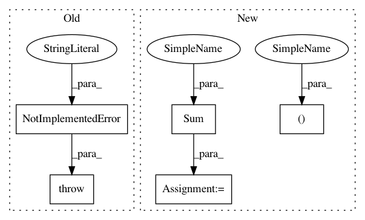

5cf0a414aa1f7c17fdc0eced712de551c335a25c,src/graph_transpiler/webdnn/frontend/chainer/functions/activation.py,,_convert_log_softmax,#Any#Any#,65
Before Change
@ChainerConverter.register_handler("LogSoftmax")
def _convert_log_softmax(converter: ChainerConverter, c_op: "chainer.functions.LogSoftmax"):
// TODO
raise NotImplementedError("[ChainerConverter] LogSoftmax is not supported")
// noinspection PyUnusedLocal
@ChainerConverter.register_handler("LSTM")
After Change
axis = x.order.axes[1]
max_x, = Max(None, axis=axis)(x)
exp_delta_x, = Exp(None)(x - max_x)
sum_exp_delta_x, = Sum(None, axis=axis)(exp_delta_x)
log_sum_delta_exp, = Log(None)(sum_exp_delta_x)
y = x - (log_sum_delta_exp + max_x)
converter.set_variable(c_op.outputs[0](), y)
In pattern: SUPERPATTERN
Frequency: 3
Non-data size: 5
Instances
Project Name: mil-tokyo/webdnn
Commit Name: 5cf0a414aa1f7c17fdc0eced712de551c335a25c
Time: 2017-11-30
Author: y.kikura@gmail.com
File Name: src/graph_transpiler/webdnn/frontend/chainer/functions/activation.py
Class Name:
Method Name: _convert_log_softmax
Project Name: mil-tokyo/webdnn
Commit Name: 84b1ba07f8f80313f7a7853db2aa3cf9f5adf441
Time: 2017-12-12
Author: y.kikura@gmail.com
File Name: src/graph_transpiler/webdnn/frontend/onnx/defs/reduction.py
Class Name:
Method Name: _convert_reduce_sum
Project Name: mil-tokyo/webdnn
Commit Name: 7877691fdca200bfd318614da06adfe2b9196b29
Time: 2017-11-30
Author: y.kikura@gmail.com
File Name: src/graph_transpiler/webdnn/frontend/chainer/functions/math.py
Class Name:
Method Name: _convert_sum